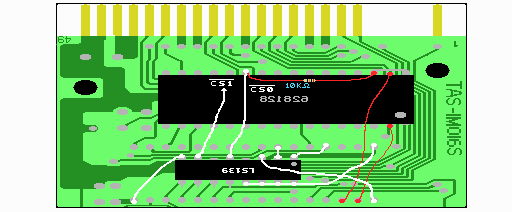

ＬＳ１３９の１番ピンをＬＺ９３Ａ１３の２９番ピンへ接続します。これはＭＳＸからのスロットセレクト信号です。
リセット信号もこの信号も、メガロムコントローラにつながっているので、そこから取る事で配線を簡単にしています。
ＬＳ１３９の３番ピンをＬＺ９３Ａ１３の１番ピンへ接続します。これはＬＺ９３Ａ１３からの拡張アドレス信号B4です。
ＬＳ１３９の８番ピンをＬＺ９３Ａ１３の１６番ピンへ接続します。これは回路図にかかれていませんが、
ＬＳ１３９のＧＮＤ信号で、ＬＺ９３Ａ１３のＧＮＤとつなげています。
ＬＳ１３９の１３〜１６番ピンをＬＺ９３Ａ１３の３２番ピンへ接続します。
これも回路図にはかかれていませんが、とりあえずＬＳ１３９の１６番ピンが５Ｖなので、
ＬＺ９３Ａ１３の３２番ピン（５Ｖ）とつなげています。
１３〜１５番ピンに関しては、使っていない入力線にも５ＶかＧＮＤを入れておいた方が良い（ＨＣ１３９では絶対に）ので、
ここでは簡単にできる５Ｖにしています。
これらの５ＶやＧＮＤはどことつなげても良い（ＳＲＡＭのＧＮＤは別）のですが、
説明では一番簡単につなげられると思われる場所を指定しています。
最後に、ＬＳ１３９の５番ピンと片方のＳＲＡＭの２２番ピンを接続します。
そして、ＬＳ１３９の７番ピンともう一方のＳＲＡＭの２２番ピンを接続します。
これらがＳＲＡＭの/CS信号となります。
図ではわかりにくいですが、/CS0が裏側のＳＲＡＭの22番ピンに、/CS1が表側のＳＲＡＭの22番ピンにつながっています。
/CS1については図６にも位置が示してあるので参考にして下さい。/CS0も/CS1も基板の裏面だけで配線できますが、
両者がくっつかないよう注意して下さい。
簡単に説明しますと、/SLTSLがlowで、/RESETがhighの時にB4という信号が0か1かによって、どちらかのＳＲＡＭへの
/CSがlowになります。つまり、B4という信号によってアクセスするＳＲＡＭを変えている訳です。
リセット信号が入っているのは、リセット時にはＳＲＡＭがアクセスされないようにして、誤動作を防ぐためです。